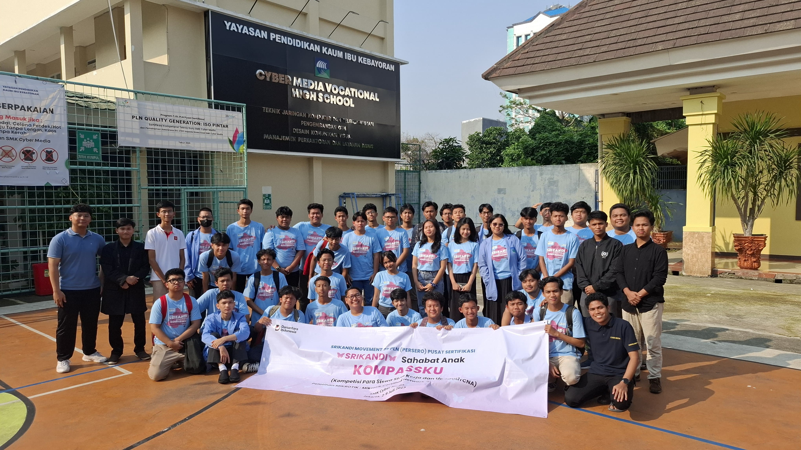

Tech Journal
Mengapa Konfigurasi Harus Rapi?
Belajar dari struktur gajah, sebuah sistem harus punya pondasi yang kuat biar gak gampang error.
Halo, Aku Zahratul Fairuz Sita. Aku percaya membangun infrastruktur IT itu harus kayak gajah: kuat, stabil, dan nggak gampang goyah. Welcome to my portofolio!
Aku fokus pada stabilitas jaringan dan efisiensi sistem. Berikut adalah beberapa hal yang aku kuasai selama belajar di SMK.
01.
Routing, Switching, VLAN, Security.
02.
Traffic Control, Firewall, Hotspot.
03.
Server Management, CLI, Services.
04.
Structure, Semantics, UI Foundation.
Tech Journal
Belajar dari struktur gajah, sebuah sistem harus punya pondasi yang kuat biar gak gampang error.

Personal
Cerita singkat tentang perjalanan aku dari yang ga ngerti apa-apa sampe ngerti apa itu subnetting.

Networking
Analisis santai mana yang lebih asik buat dipake di skala kecil.
Aku percaya bahwa hasil kerja nyata lebih bermakna daripada sekadar kata-kata. Ini adalah beberapa projectku.
WEB DEVELOPMENT
HTML • Tailwind • JS
→NETWORKING
Hardware • Cabling • Troubleshooting
→SYSTEM CONFIG
VLAN • OSPF • Firewall
→